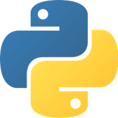

1996
I was born in Park Ridge, Illinois, but moved to Minnesota six months later. A couple of months later I settled in Eden Prairie, Minnesota.
2008
In middle school, I was introduced to Scratch. It opened my eyes to what I could make with programming. For the next few years, I made games and animations for Scratch and was active in the Scratch community.
2012
However, Scratch was limited in speed and extensibility. I wanted more, so I explored other languages and frameworks. I chose Python and Pygame because of its ease of use compared to Java and C++ frameworks. Over the next year, I created games such as Flappy Pipes and UN-Scramble.
September 2013
The website first goes up. I learn a bit of HTML and CSS to format the site, but I ultimately used a template. However since November 2015, the new domain is andrewyang.xyz, although the old domain is still available.
August 2014
I am currently a computer science major at the University of Illinois at Urbana-Champaign. I have since learned a lot, especially regarding computer science. I was introduced to various technologies from C++ to Node.js, and I hope to apply what I've learned to do great things.
I also love good quotes. Here's one of my favorites below. Click on it for another quote
{QUOTE}
For freshman year and the first semester of sophomore year, I developed a website for Student Space Systems, a technical RSO at UIUC. The old website was badly in need of an update. Taking on this project was also an opportunity to hone my full-stack web development skills. I learned various CSS tricks... before switching over to Bootstrap, and I paid careful attention to Javascript animations. I also used a Node.js backend and created documentation so that members with minimal technical experience can update and deploy the website.
This project has helped me develop lots of skills crucial to the real-world. I had to communicate regularly with the Student Space Systems executive board for content updates and general feedback. I had to research the various libraries that I would use, and I occasionally had to refactor lots of code. But in the end I learned a lot from doing, and it was definitely a valuable experience.
I worked with Professors Sheldon Jacobson and Douglas King on their research project: BracketOdds. It aims to predict the outcomes of the NCAA March Madness tournament based solely on seed numbers. I implemented their power model for generating brackets that look realistic based on performances by seed number in past tournaments. There were over 16000 brackets generated in the week before the round of 64 started. Here are some stats:
Score distribution of the 16068 "eligible" brackets.
Over the summer after freshman year, I interned at Entrust Datacard in Shakopee, MN. I greatly expanded my knowledge in software engineering during the three months and learned the importance of agile development and continuous integration. My two main projects were replacing the log4j framework with the logback framework, and to refactor the TruCredential codebase to use the company's foundational libraries for common functionality across all Entrust Datacard software.